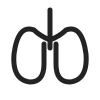

MATCHBOOK LEARNING · MORNING MEETING
MATCHBOOK LEARNING · MORNING MEETINGShow-Me Cards · Tarjetas para mostrar
Cut on the lines. Students hold up a card during Connect · Share so every student answers at the same time, with or without speaking.
 Choice AOpción A
Choice AOpción A Choice BOpción B
Choice BOpción B I need more timeNecesito más tiempo
I need more timeNecesito más tiempoMy Mad Body
Name: _____________________


Students: Color where your body feels mad. Circle a face that shows mad.
Estudiantes: Colorea dónde se siente el enojo en tu cuerpo. Encierra una cara que muestra enojo.
Corazón rápido

Puños apretados
Voz fuerte
My commitment: When I feel mad, my body…
Cuando me enojo, mi cuerpo…
Family chat: Where do you feel mad in your body?
Charla en familia: ¿Dónde sientes el enojo en tu cuerpo?
Point, say, draw, dictate, or write.
My Cool-Down Tools
Name: _____________________

Students: Color the cool-down tools you can use. Circle your favorite tool.
Estudiantes: Colorea las herramientas que puedes usar. Encierra tu herramienta favorita.
Respira con la barriga
Aprieta y suelta
Rincón de la calma
My commitment: When I feel mad, I can…
Cuando me enojo, puedo…
Family chat: What helps you calm down when you feel mad?
Charla en familia: ¿Qué te ayuda a calmarte cuando te enojas?
Point, say, draw, dictate, or write.
Use Your Words
Name: _____________________

Students: Match each problem to the kind words. Draw yourself using your words.
Estudiantes: Une cada problema con las palabras amables. Dibújate usando tus palabras.
Me pongo triste cuando lo tumbas.
Por favor, déjame tener un turno.
Por favor, para. No me gusta.
My commitment: When I have a problem, I can say…
Cuando tengo un problema, puedo decir…
Family chat: What can you say when someone makes you upset?
Charla en familia: ¿Qué puedes decir cuando alguien te molesta?
Point, say, draw, dictate, or write.
Safe Hands, Safe Choices
Name: _____________________


Students: Color the safe choices. Cross out the unsafe one. Draw a grown-up who can help you.
Estudiantes: Colorea las decisiones seguras. Tacha la que no es segura. Dibuja a un adulto que te puede ayudar.
Manos seguras
Me alejo
Busco a un adulto
My commitment: When I feel so mad, I keep safe hands and…
Cuando estoy muy enojado, mantengo las manos seguras y…
Family chat: Who is a grown-up you can go to for help?
Charla en familia: ¿Quién es un adulto al que puedes pedir ayuda?
Point, say, draw, dictate, or write.